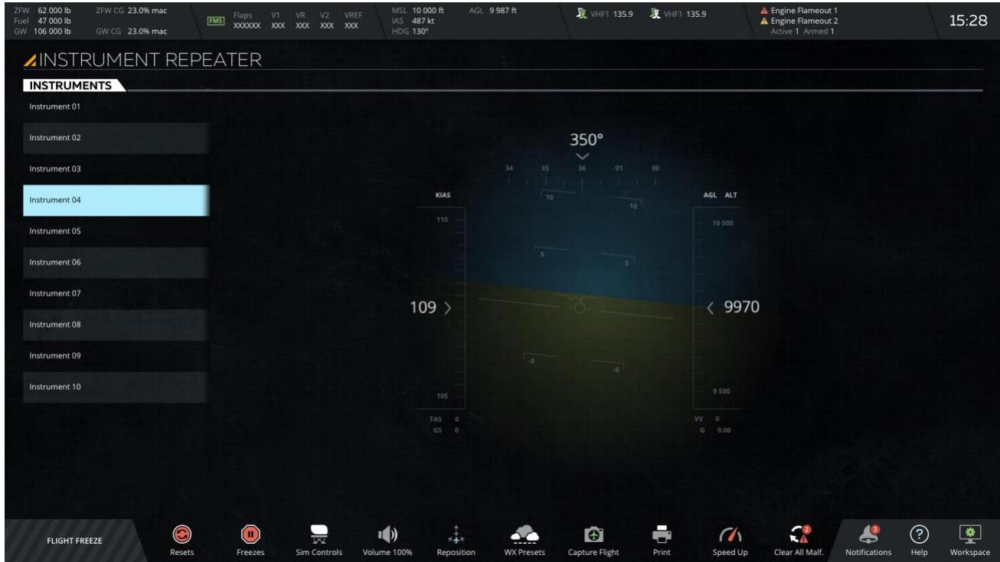

1.4 仪表复示器工作区（INSTRUMENT REPEATER）
对应原始手册：## 13. INSTRUMENT REPEATER Workspace
一、功能层级与界面总览
1.1 功能层级结构
graph TD
subgraph Header["Map Header / 地图标题"]
H1[Workspace Switcher
工作区切换] H2[IOS Configuration
IOS配置] end subgraph Main["Main Section / 主区域"] A[INSTRUMENTS Tab
仪表选项卡] B[Instrument View Mode Section
仪表视图模式区域] end subgraph Footer["Map Footer / 地图页脚"] F1[Flight Freeze
飞行冻结] F2[Resets / Freezes
重置/冻结] F3[Sim Controls / Volume
模拟控制/音量] F4[Reposition / Weather
重新定位/天气] F5[Help / Workspace
帮助/工作区] end A --> A1[Instrument List
可用仪表列表] B --> B1[Selected Instrument Display
选中仪表显示区] A -.->|选中显示| B style Header fill:#e0e7ff,stroke:#4338ca,stroke-width:2px style Main fill:#dbeafe,stroke:#2563eb,stroke-width:2px style Footer fill:#e0e7ff,stroke:#4338ca,stroke-width:2px
工作区切换] H2[IOS Configuration
IOS配置] end subgraph Main["Main Section / 主区域"] A[INSTRUMENTS Tab
仪表选项卡] B[Instrument View Mode Section
仪表视图模式区域] end subgraph Footer["Map Footer / 地图页脚"] F1[Flight Freeze
飞行冻结] F2[Resets / Freezes
重置/冻结] F3[Sim Controls / Volume
模拟控制/音量] F4[Reposition / Weather
重新定位/天气] F5[Help / Workspace
帮助/工作区] end A --> A1[Instrument List
可用仪表列表] B --> B1[Selected Instrument Display
选中仪表显示区] A -.->|选中显示| B style Header fill:#e0e7ff,stroke:#4338ca,stroke-width:2px style Main fill:#dbeafe,stroke:#2563eb,stroke-width:2px style Footer fill:#e0e7ff,stroke:#4338ca,stroke-width:2px
1.2 界面结构
| 区域/控件 | 位置 | 功能说明 |
|---|---|---|
| Map Header 地图标题栏 | 顶部 | 与地图工作区标题栏相同，提供工作区切换、IOS 配置等功能入口 |
| INSTRUMENTS Tab 仪表选项卡 | 主区域左侧/上部 | 列出驾驶舱中所有可在仪表视图模式下显示的可用仪表，点击进行选择 |
| Instrument View Mode Section 仪表视图模式区域 | 主区域右侧/主体 | 显示在"仪表"选项卡中选中的座舱仪表画面，实时复示 |
| Map Footer 地图页脚 | 底部 | 与控制面板底部（Control Board Footer）相同，提供飞行冻结、重置、工作区切换等快捷功能 |

图 1：仪表复示器工作区总览（INSTRUMENT REPEATER Workspace）
二、核心功能详解
2.1 仪表选项卡（INSTRUMENTS Tab）
触发方式：进入仪表复示器工作区后，主区域默认显示 INSTRUMENTS Tab。该选项卡列出驾驶舱中所有可用的仪表，这些仪表可在仪表视图模式下显示。教员通过点击列表中的仪表名称来完成选择。
| 属性 | 说明 |
|---|---|
| 功能定义 | 列出驾驶舱中所有可被复示到 IOS 显示屏上的可用仪表 |
| 呈现方式/交互方式 | 以列表形式呈现，点击仪表名称进行选择；选中后驱动右侧视图区域显示对应仪表 |
| 边界行为 | 根据 IOS 配置，该工作区可编程用于查看和复示多个驾驶舱仪表；若无可复示仪表则列表为空（注：需根据实际 IOS 配置确认） |
| 与其他功能关系 | 与 Instrument View Mode Section 为依赖关系，选择结果直接决定视图区域显示内容 |
2.2 仪表视图模式区域（Instrument View Mode Section）
触发方式：在 INSTRUMENTS Tab 中点击仪表名称后，该区域自动显示所选仪表的实时复示画面。无需额外操作。
| 属性 | 说明 |
|---|---|
| 功能定义 | 将驾驶舱中选定的仪表画面实时复示到 IOS 当前监视器上 |
| 呈现方式/交互方式 | 只读显示区域，接收并渲染来自模拟器的仪表画面数据流 |
| 边界行为 | 未选择仪表时该区域为空或显示默认提示；画面刷新频率与模拟器帧率同步（注：具体帧率取决于模拟器实现） |
| 与其他功能关系 | 依赖 INSTRUMENTS Tab 的选择结果；与 Map Header / Footer 共享同一套工作区框架 |
三、全局操作流程与推导
3.1 仪表复示器教员核心操作流程全景图
flowchart LR
Start([进入仪表复示器工作区]) --> OP_TYPE{选择操作类型}
OP_TYPE -->|选择仪表| INSTRUMENTS_ENTRY[查看 INSTRUMENTS Tab]
OP_TYPE -->|不选择| NO_SELECT[不选择仪表]
subgraph INSTRUMENTS_FLOW["仪表选择与复示流程 — 2.1 / 2.2"]
INSTRUMENTS_ENTRY --> Select{选择目标仪表}
Select --> Load[系统加载仪表数据流]
Load --> Display[仪表画面显示在 View Mode]
Display --> Unsubscribe[取消旧仪表订阅]
end
NO_SELECT --> End([训练就绪/复示完成])
Unsubscribe --> End
style Start fill:#dbeafe,stroke:#2563eb
style End fill:#d1fae5,stroke:#059669
style OP_TYPE fill:#fef3c7,stroke:#d97706
style NO_SELECT fill:#fee2e2,stroke:#dc2626
3.2 仪表复示通用状态机
stateDiagram-v2
[*] --> 空闲态 : 进入工作区时
空闲态 --> 选择中 : 点击仪表列表时
选择中 --> 显示中 : 系统加载完成时
显示中 --> 选择中 : 切换其他仪表时
选择中 --> 空闲态 : 取消选择或关闭时
显示中 --> 空闲态 : 关闭工作区或切换工作区时
显示中 --> 冻结中 : 飞行冻结激活时
冻结中 --> 显示中 : 飞行冻结解除时
| 状态 | 说明 |
|---|---|
| 空闲态 | 进入仪表复示器工作区，尚未选择任何仪表；View Mode 区域为空或显示默认提示 |
| 选择中 | 教员在 INSTRUMENTS Tab 中点击了某个仪表名称，系统正在加载对应数据流 |
| 显示中 | 选中仪表的画面已成功在 View Mode 区域中实时复示 |
| 冻结中 | 飞行冻结激活时，仪表画面继续显示，数据更新行为取决于模拟器冻结策略（注：需根据实际模拟器实现确认） |
3.3 关联依赖与异常边界
3.3.1 关联依赖
| 功能点 | 依赖对象 | 依赖说明 |
|---|---|---|
| Map Header | 地图工作区（Map Workspace） | 与地图工作区共用同一套标题栏组件，包含工作区切换器 |
| Map Footer | 控制面板底部（Control Board Footer） | 与 1.2.7 控制面板底部共用同一套页脚组件，功能完全一致 |
| 仪表列表 | IOS 配置 | 可复示的仪表数量和类型由 IOS 配置决定 |
| 仪表画面 | 模拟器数据总线 | 需实时订阅对应仪表的渲染数据流 |
3.3.2 异常边界
| 场景 | 边界行为 |
|---|---|
| 无可复示仪表 | INSTRUMENTS Tab 列表为空，显示默认空状态提示 |
| IOS 配置变更 | 可复示仪表列表应动态刷新；若当前显示仪表被移除则回退到空闲态 |
| 模拟器断开连接 | View Mode 区域显示连接中断提示或保留最后一帧画面（注：具体行为取决于客户端实现策略） |
| 飞行冻结激活 | 仪表画面继续显示，数据更新行为取决于模拟器冻结策略（注：需根据实际模拟器实现确认） |
3.4 数据流与开发流程推导
3.4.1 数据流
教员点击仪表名称
↓
UI 事件：instrument_select(instrument_id)
↓
前端状态变更：selected_instrument = instrument_id
↓
API 请求：订阅仪表数据流 SUBSCRIBE /instrument/{id}/stream
↓
模拟器后端：建立数据通道，推送实时仪表渲染帧
↓
前端接收：WebSocket / 轮询更新 View Mode 画布
↓
画面呈现：教员在 IOS 监视器上看到复示仪表画面3.4.2 API 接口契约建议
| 接口名 | 请求字段 | 响应字段 | 错误码 |
|---|---|---|---|
GET /api/v1/instruments | — | instruments[{id, name, category}] | 500 CONFIG_READ_FAILED |
WS /api/v1/instrument/{id}/stream | instrument_id（路径参数） | 实时二进制/JSON 帧数据流 | 404 INSTRUMENT_NOT_FOUND, 403 NO_PERMISSION |
POST /api/v1/instrument/unsubscribe | instrument_id | success, unsubscribed_id | 400 NOT_SUBSCRIBED |
四、测试要点
| 测试类型 | 测试场景 | 期望结果 |
|---|---|---|
| 正向路径 | 进入仪表复示器工作区，点击 INSTRUMENTS Tab 中某仪表 | View Mode 区域正确显示该仪表实时画面 |
| 正向路径 | 切换不同仪表 | 画面无残留，新仪表画面正确加载，旧仪表数据流已取消订阅 |
| 异常路径 | 无可复示仪表配置 | INSTRUMENTS Tab 显示空状态，不触发错误 |
| 异常路径 | 模拟器连接中断 | View Mode 给出友好提示（如"连接中断"），不崩溃 |
| 边界条件 | IOS 配置动态变更（添加/移除仪表） | 列表自动刷新，当前显示仪表被移除时优雅回退 |
| 边界条件 | 高频快速切换仪表 | 无内存泄漏，无画面撕裂，旧订阅正确清理 |
| 联动测试 | 飞行冻结激活期间仪表复示 | 画面保持显示，行为符合模拟器冻结策略 |
| 性能测试 | 多仪表同时复示（若配置支持） | 帧率稳定，无卡顿，带宽占用在合理范围 |
五、变更记录
| 日期 | 版本 | 变更内容 |
|---|---|---|
| 2026-06-05 | V1.0 | 初始生成 ch1_4 仪表复示器工作区 HTML，含功能层级图、界面结构、核心功能详解、操作流程、状态机、API 契约建议及测试要点 |
| 2026-06-08 | V1.1 | Redline Review 优化：1）修复 3.2 状态机 transition label 冒号语法错误（改为"时"连词）；2）修复 img-row 缺少 flex-wrap；3）重构 3.1 流程图消除 subgraph 内重复边，增加 OP_TYPE 决策点和"不选择"异常分支；4）2.1/2.2 补充触发方式说明；5）3.4.2 API 接口表格统一为四列格式（接口名/请求字段/响应字段/错误码）；6）测试要点去除 rowspan，增加独立「测试类型」列；7）统一"（待确认）"标记为规范注释格式 |